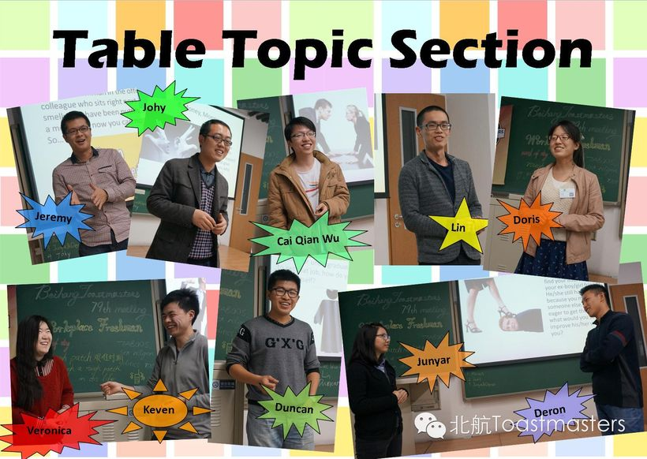
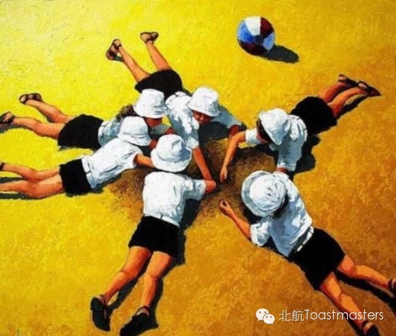

岁在甲午，时维仲春。北航灯火之下，几个年轻人，立起了一方小小的讲台。
自此而后，每逢周五入夜，总有人合上电脑、走出实验室，穿过晚高峰的喧嚷，只为登台一回——把藏在心底的话，朗声说与人听。
十载光阴，五百三十九次书写，三百八十六回相聚，近四千帧旧影。台上有初次开口的颤抖，有临别时的哽咽，有满堂大笑，也有未及拭去的泪。人来人往，聚散难凭；唯有那一句一句话语，被一一记下，不曾散佚。
而今灯火将暗，此处亦要作别。然纸短情长——凡曾在此认真开口的人，与他们说过的每一句话，都收在这一卷里，长留，不散。
门一直开着，常回来看看。
我们一起走过的十年
把十年分成六段来读。每一段里，都有人第一次发抖着开口，也有人含泪告别。轻点照片，回到那个夜晚。
创立元年
2014年，一切才刚刚开始。创始会长Wesley把火种留下，又在这一年从吉隆坡的国际峰会归来，重回这个由他亲手点亮的讲台。而更多名字，是在这一年第一次走上台前的：有人坦白自己来头马的初衷不过是"come here to see some beautiful girls"，后来才明白，这里真正给的是一个舞台——"You can stand there, tell your stories, share your thoughts."
这一年里，Red Runyon从洛杉矶带来18个月走完全部项目、走过约70国的传奇，也留下一句关于肢体的箴言："Don't be a tree. Move like water in a stream." 春天有上庄的烧烤，暑假有鸟巢3D艺术馆的出游，5月与联想Northstar俱乐部联合例会，秋天办起了幽默演讲比赛。Sophie、Cindy、Stan在第65次例会举行入会仪式，新一届干部同日就职；而Amanda们则在告别会上离开——"It's heart broken, but also inspiring."
年末，Doris借一台"时光机"带大家回看各自的2014，Keven做年度总结，Grace唱起《那些花儿》。所有的勇气、犹豫与第一次，都被郑重收进这一年。正如他们写下的："Anyway, everything just starts from its first time, isn't it?"


黄金年代
2015年，北航头马走到了它最密集、最热闹的一年——一百六十篇推送，几乎是每周一次的舞台。六月，成立三度春秋的俱乐部迎来史诗级的第100次例会：无table topic、无禁忌的全中文纪念会上，他们回顾从教父Wesley白手起家，到Peter、Doris直至Sophie几代主席的传承，也送别了"最走心的VPE神僧Monk"和"在俱乐部找到真爱的Dale"。那一句"我们头马人永不毕业"喊出来时，笑点泪点并存。
这一年的舞台无关语言。十月，他们办了有史以来第一次中文会议，还与Athena女神俱乐部同台分享；十二月，上海、济南、吉林的头马朋友齐聚北航，真有"一种全国一家人的赶脚"。秋季比赛上，选手们化身《海贼王》角色登场，喊着"Go For One Piece"；有人说Mauna Loa"的火焰没有攻击性，而是让你感觉到温暖的存在"。
热闹之下，是一颗颗被稳稳托住的心。Kiki从广州转战北京，"因为感受到同样亲切友好的氛围"，她渐渐懂得"只有拿出我最深藏的感情才能触动观众最深的内心"。新人Crystal记得第一次迟到、在门口犹豫时，一位学姐笑着说"没关系的~进去吧~"。而那句反复出现的召唤始终温柔：关上电脑，走出实验室，冲出自己的心理舒适区，来这里吸收源源不断的正能量吧。
巅峰之年
2016年，是北航Toastmasters最从容的一年。157篇推送像一周一封不曾断过的信，从猴年首秀的"Leaving Home"，到春季比赛上那场围绕AlphaGo战胜李世石、AI是否威胁人类的即兴辩论，主题越来越宽，舞台越来越熟。这一年公众号开通了原创认证，小编敢在国庆前夜写下"约上你最想约的人一起出去走走吧，没有的话不要紧，我会陪伴在选择宅的你们身边"。
成熟，是因为有人在台上真正长大了。十月节日主题的第157次例会上，Flair被记成"现象级"——"从几个月前第一次到头马舞台默默无闻、连讲话都断断续续，到现在一口流利的表达"。这一年也送走了很多人：三周年趴上揭开了创始人Wesley为多与心仪女孩交集而创社的旧事，也为离别的Bean写下"此去经年，应是良辰、好景虚设"；而Bean被问毕业感言，只答一句"我在北京不离开，留着继续说"。
它不再只属于自己。这一年与Ameco、星火、GC、北化的联合例会接连不断，三个俱乐部围着Aloneness同台。有人把头马唤作"可停靠的港湾"，有人在告白里说"我们大家共享一位恋人，我们也是彼此的恋人，记得每周五的约定哟"。年终联合例会以"Resolution"收束这一年——"It will be a good chance to sum up the past and look into the future."
生长岁月
2017、2018两年，北航头马慢慢长成了一棵会落种、会开花的树。这是一段"沉淀与传承"的岁月：2017年元旦趴上，新主席Amy上任，Bowen主持官员换届，Gastby吹起竹笛，Winston唱起《一生有你》，大家郑重地为即将工作离开的Vance、Bowen、火山送别——"头马永远是你们的家。常回家看看咯"。这一年里有CC手册系列科普上线，把破冰、点评、Timer、Grammarian这些角色一一讲清；也有南苏丹会员James讲述家乡如何从战火中恢复，有Milton的"摆渡人"演讲，记录者在台下轻轻回应："you definitely already are Mr Milton."
蜕变在悄悄发生。新会员May破冰时紧张到忘词，最后还是坚持把演讲讲完了——"Finally, she made it!" 害羞男孩Kaisense两年后变得开朗，立志"帮更多朋友克服心里的恐惧，去享受更好的生活"，在开放日讲起自己"枯木开花"的故事。这正是俱乐部对自己的定义："我们不是普通的英语角……你的每一次演讲，都会得到大家积极的意见反馈，将恐惧转变为享受。"
2018年6月13日，自2013年成立以来的第200次会议如约而至，超过30人齐聚，历届前任主席回望来路，D中区长Kiwi带来开场热舞，有笛声、英文歌、游戏、感恩与切蛋糕。那天的结语像一句静静的祝福："每一个人都是一朵含苞欲放的花……希望我们可以在北航头马这个舞台上找到属于我们自己的精彩，尽情绽放！"年末的官员竞选选出新主席Michael，又一棒交到下一双手里——感恩头马让我们相知，因为有你们，未来会更好。
余韵与静默
2019年的北航Toastmasters仍在认真地把每一次会议过成一场修行。那一年23篇推送里，有人为《Smile》写下"微笑无言，却胜过千言万语"，有人在《逆商》会议上记下"逃避逆境等于逃避生活"，也有人在《Minority》里劝彼此"做真实的自己就好"。一月的演讲马拉松上，备稿演讲者翻倍到七八人；三月首次俱乐部内选拔，备稿八人、即兴四人共十二位选手登台，Cynthia与Joshua各夺一冠。
人是这间教室最动人的部分。"更多的人来自下班的路上，来自晚高峰的北京地铁口，甚至有几位会员晚饭都来不及吃，下班后便急匆匆赶过来。"小编坦白自己"至今不敢举手上台"，却仍把"一入头马门，从此一家人"挂在嘴边。大咖们也愿意来：Freedom的备稿工作坊、Mason Wang的即兴技巧，把舞台越铺越宽。
然后是2020。整整一年，只剩一篇。十月那场Open Day第一次搬上腾讯会议，线上线下勉强接续。喧哗散去，灯也调暗，但"两条路在林中分岔，我选了人少的那条"的回声还在——这一年的静默，不是结束，是屏息。
重逢与告别
2021年的秋天，北航头马重新打开了门。招新长文里没有华丽的承诺，只有一句朴素的自白：「也许，我们不是最会说，但一定最敢说。」那一年的回忆是具体而温热的——小伙伴家里包粽子过端午，夜爬鬼笑石，骑行北京城，雁栖湖、南锣鼓巷、奥森公园、凤凰岭，短短一年就一起踏过了太多地方。
10月，第337次会议Open Day把六十多人聚在一起。这是2013年成立以来少见的热闹：角色扮演、游戏、答谢仪式、抽奖，连例会的形式都被打破了。主席Florence说，相遇便是缘；散场时留下的寄语是——要勇敢上台，展现自我，期待我们都能遇到更优秀的自己。
时间走到2023。那年春天有人写下一首关于「认识自己」的诗，相信无论多难，都要追随内心的梦。6月1日，第386次中文会议以《三体》为题，遨游科幻时空——这是现存存档里编号最大的一次例会，也是这群人留给公众号的最后声音。如今这个号即将关闭，但那句「陪着北航头马，慢慢变老」的话还在，怀着感恩的心，感恩遇见。
十年，刚好可以装进一本册子
从 2014 年春天的第一声，到 2023 年的第 386 次例会——这些数字背后，是一个又一个真实的人、真实的夜晚。
逐年推送 · 一条心跳曲线
2015–2016 是最密集的黄金两年，几乎每周一封信；2020 年只剩一篇，那是疫情里的屏息。
十年 × 十二月 · 活跃热力图
颜色越绿，那个月越热闹。春秋两季的招新与比赛，总是格外滚烫。
都在写些什么
绝大多数，是一周一次的例会记录——这正是一个演讲俱乐部最朴素的日常。
会议次数进程 · 从第 50 次到第 386 次
每一个点，都是一次有人站上讲台的夜晚。它们连成一条线，安静地一路向上。
那些被讨论过的词
Hope、Dream、Freedom、Memory、Choice…… 一百多个英文主题，像一本属于这群人的情绪词典。
十年里，每一个开口的人
343 个名字、58 份成长档案。每个人都有专属页：他的演讲与总结、担任的职责、里程碑、头马里的关系，和一面专属照片墙。


那些被留下来的话
它们曾在某个周五的夜晚被人大声说出，又被小编一字一句记进推送。点开任意一张，回到它的那一篇。
There are so many first times throughout our life. They are the most precious moments. They are moments full of strong feelings. They are feelings that we can hardly forget.
2014 · 第81次Toastmaster is a place to help you grow. Be the change you want to see the most! And we would help you to achieve this.
2014 · 第73次Time after time, we'll have to leave the faces that we are so familiar with. It's heart broken, but also inspiring. Through their experience in Beihang Toastmasters Club, they've become more confident, and more competent.
2014 · 第64次In the confrontation between the stream and the rock, the stream always wins. Not through strength, but through persistence.
2014 · 第55次踏上一个人的路途，独自欣赏沿途风景，对于很多人来说并非易事。然而生命中往往需要这样的孤独时刻，去思考，去历练，如此方能成就一个坚毅的灵魂。
2014 · 第80次舍安逸，得挑战；舍急躁，得平静；舍时间，得成果；舍真情，得真爱。若能一切随他去，便是世间自由人。
2015 · 第123次越来越觉得演讲不应该是这样的，只有拿出我最深藏的感情才能触动观众最深的内心，哪怕只是让他们多思考一点甚至是改变一点，我认为这才是演讲的意义所在。
2015 · 第119次第一次来的时候还迟到了，在门口犹豫着要不要进去，这时候一个学姐正好经过，笑着跟我说没关系的~进去吧~~
2015关上电脑，走出实验室，冲出自己的心理舒适区，来这里吸收源源不断的正能量吧
2015印象最深的一件事整个俱乐部的氛围，大家之间真诚的友谊，让我迫不及待的去融入这个大家庭
2015Every Toastmasters journey begins with a single speech. During their journey, they learn to tell their stories.
2015 · 第119次May you—— Be the change you wish to see in the world!
2016在这里，你不必担心说得不好，也不必担心自己基础不够，我们的成员大多数也并非英文专业。然而，我们这里有专业的 Evaluators， 他们眨着一双双大眼睛发现你的演讲中的闪光点， 给你提供可靠的且富有建设性的 feedback ，与你共同进步。
2016当被一个朋友伤害时，要写在易忘的地方，风会负责抹去它；相反的如果被帮助，我们要把它刻在心里的深处，那里任何风都不能抹灭它。
2016 · 第160次OMG,Flair今晚的发挥绝对是现象级的，从几个月前第一次到头马舞台来的默默无闻，连讲话都断断续续，到现在一口流利的表达，flair真的进步是飞常大！
2016 · 第157次每一个人都是一朵含苞欲放的花，每一朵花都有属于自己的精彩，希望我们可以在北航头马这个舞台上找到属于我们自己的精彩，尽情绽放！
2018 · 第200次我们不是普通的英语角，我们是一个展示自己，锻炼公众英语演讲能力的平台。你的每一次演讲，都会得到大家积极的意见反馈，以期望你能在下次的展示中将缺点转化为优点，将恐惧转变为享受。
2018Two years ago he was a shy boy... once he became more outgoing person... the more time he spent, the more value he received... he believes the duty to spread what he has learned in toastmasters and to help more friends overcome their fear in their hearts.
2018Even if happiness only instant blossom like fireworks, if you go to cherish, so, this also can become the eternal moment. there are always something unexpected to let you memorize forever.
2018 · 第188次成功者懂得，逆境是生活的一部分，逃避逆境等于逃避生活。
2019 · 第235次Two roads diverged in a wood, and I— I took the one less traveled by, And that has made all the difference.
2019 · 第238次一入头马门，从此一家人！
2019 · 第230次相遇便是缘，分享从相遇到收获一路走来，满满的精神食粮。
2021 · 第338次也许，我们不是最会说，但一定最敢说 我们会怀着感恩的心，感恩遇见 陪着北航头马，慢慢变老
2021十年，386 次例会，无数个深夜里鼓起勇气的开口。
那些在台上勇敢说出的每一句话，那些被 Evaluator 用眼睛发现的闪光，那些「一入头马门，从此一家人」的温暖，那些「陪着北航头马，慢慢变老」的约定，都被一笔一笔地，留在了这本册子里。
也许我们不是最会说的人，但一定是最敢说的人。十年里每一次开口，都是一次小小的不服输。
这里，是北航头马人的家。无论你已经走了多远、多久没有回来，门一直为你开着——常回来看看，看看这些人，也看看当年那个敢开口的自己。
谢谢北航头马，谢谢每一个曾经站上讲台的你。